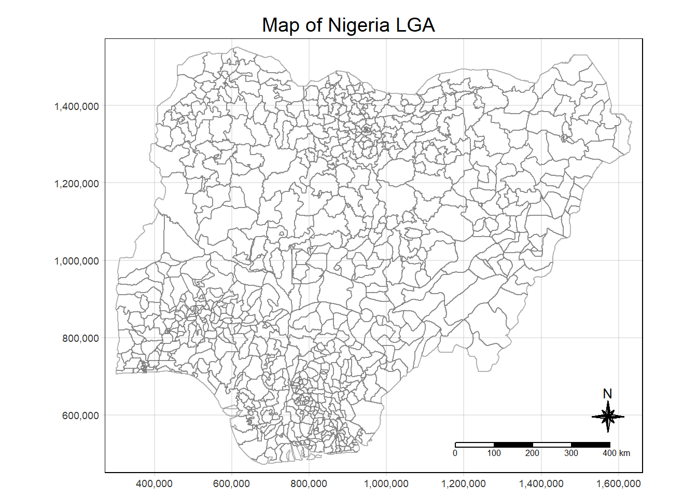
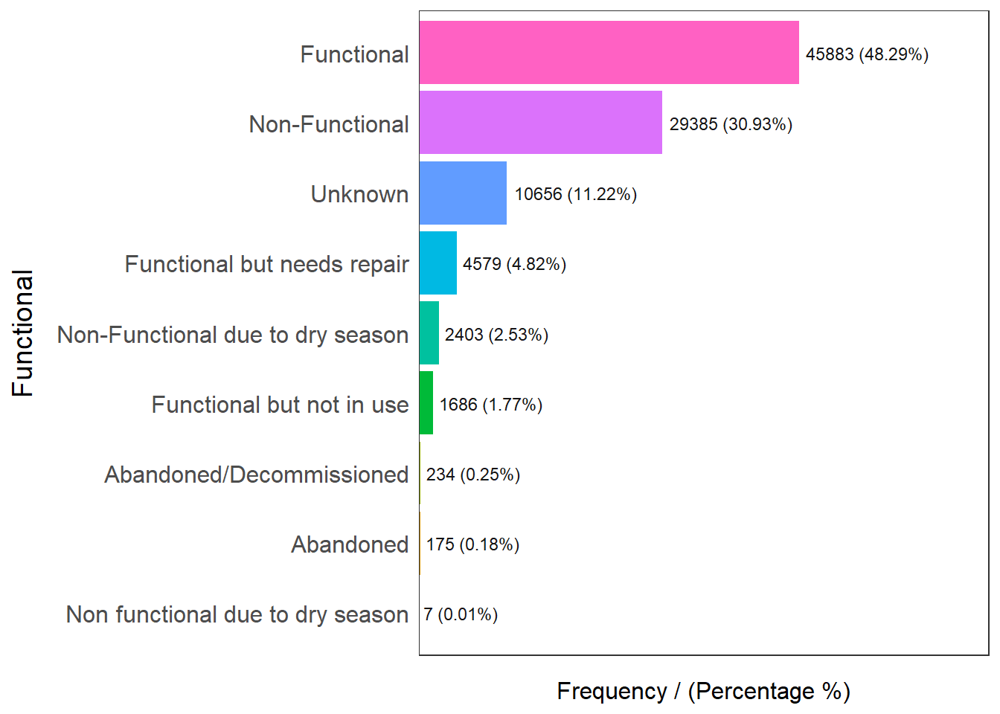
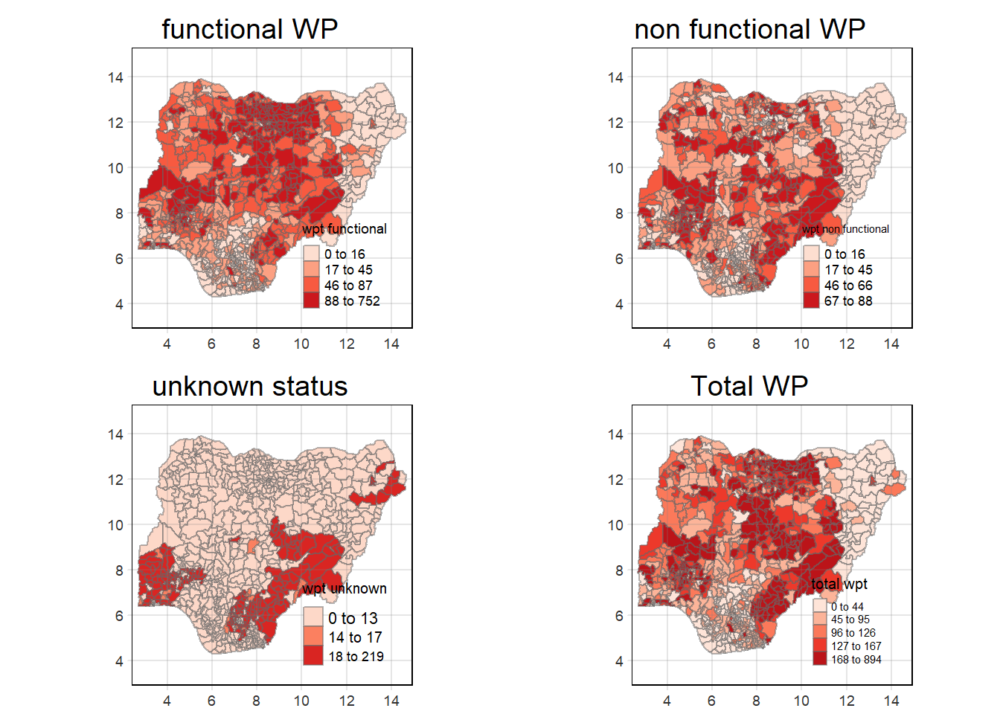

pacman::p_load(sf,tidyverse,spdep, tmap, funModeling)Take Home Exercise 1 - Investigation of Water points in Nigeria
Overview
For humanity, water is a valuable resource. To maintain good health, people need access to clean water. It guarantees peace and security, creates a healthy environment, and supports a sustainable economy. However, there is insufficient clean water for more than 40% of the world’s population. UN-Water predicts that by 2025, 1.8 billion people would reside in areas with a complete water shortage. Food security is one of the many areas that are seriously threatened by the water crisis. About 70% of the freshwater that is available on Earth is used for agriculture.
Water scarcities and poor water quality are worst in developing nations. Inadequate water and sanitation systems are a contributing factor in up to 80% of diseases in impoverished countries.
Despite technological advancements, supplying clean water to rural communities remains a significant development challenge in many nations worldwide, particularly in those of the continent of Africa.
In this study, appropriate global and local measures of spatial Association techniques will be employed to reveal the spatial patterns of Non Functional water points. In this assignment, we will investigate Nigeria’s Local Government Area (LGA)
Getting Started
First, the required packages are loaded into the R environment . The required packages are sf, spdep, tmap & tidyverse, funModeling with the code below:
Spatial Data
The spatial dataset used in this assignment is the Nigeria Level-2 Administrative Boundary spatial dataset
We will load the spatial features by using st_read() from the sf package
As the data is in WSG-84 format, we set crs to 4326.
As we need to perform the intersect function later to combine the water points data, we will not use st_transform() as it may produce outputs with missing points post transformation.
nga = st_read(dsn = "data/geospatial",
layer = "nga_admbnda_adm2_osgof_20190417",
crs = 4326)Reading layer `nga_admbnda_adm2_osgof_20190417' from data source
`D:\Allanckw\ISSS624\Take-Home_Ex1\data\geospatial' using driver `ESRI Shapefile'
Simple feature collection with 774 features and 16 fields
Geometry type: MULTIPOLYGON
Dimension: XY
Bounding box: xmin: 2.668534 ymin: 4.273007 xmax: 14.67882 ymax: 13.89442
Geodetic CRS: WGS 84#nigeria_lga_sf = st_transform(nigeria_lga_sf, crs=4326) cause missing points
st_crs(nga)Coordinate Reference System:
User input: EPSG:4326
wkt:
GEOGCRS["WGS 84",
ENSEMBLE["World Geodetic System 1984 ensemble",
MEMBER["World Geodetic System 1984 (Transit)"],
MEMBER["World Geodetic System 1984 (G730)"],
MEMBER["World Geodetic System 1984 (G873)"],
MEMBER["World Geodetic System 1984 (G1150)"],
MEMBER["World Geodetic System 1984 (G1674)"],
MEMBER["World Geodetic System 1984 (G1762)"],
MEMBER["World Geodetic System 1984 (G2139)"],
ELLIPSOID["WGS 84",6378137,298.257223563,
LENGTHUNIT["metre",1]],
ENSEMBLEACCURACY[2.0]],
PRIMEM["Greenwich",0,
ANGLEUNIT["degree",0.0174532925199433]],
CS[ellipsoidal,2],
AXIS["geodetic latitude (Lat)",north,
ORDER[1],
ANGLEUNIT["degree",0.0174532925199433]],
AXIS["geodetic longitude (Lon)",east,
ORDER[2],
ANGLEUNIT["degree",0.0174532925199433]],
USAGE[
SCOPE["Horizontal component of 3D system."],
AREA["World."],
BBOX[-90,-180,90,180]],
ID["EPSG",4326]]We can examine how the base map looks like by using the tmap package
tm_shape(nga) +
tm_borders(alpha=0.5) +
tm_compass(type="8star", size=2) +
tm_scale_bar() +
tm_grid (alpha=0.2) +
tm_layout(main.title="Map of Nigeria LGA",
main.title.position="center",
main.title.size=1.2,
legend.height = 0.35,
legend.width = 0.35,
frame = TRUE) 
Aspatial Data
Cleaning the Data
The aspatial dataset used in this assignment is the water point data exchange dataset found in WPdx Global Data Repositories. Data is filtered on the web portal to only keep Nigeria and the file is saved as NigeriaWaterPoints_Raw.csv
As we are only interested in the functionality of the water point, it is important to capture fields that may affect the functionality
LGA: The area we are interested in
State: The state of the LGA of Nigeria
Functional: Whether it is functional or not
management: who manages it?
Quality: what is the quality?
Water Source Category: where the water came from?
Water Tech Category: What technology is used?
latitude
longitude
To load the raw data file, we use the read_csv function
wpdx_raw = read_csv("data/aspatial/NigeriaWaterPoints_Raw.csv") Most of the columns are irrelevant, so we will perform the following:
keep the columns we want to clean it up by specifying the columns with one to retain with
subsetrenaming the columns using
rename_withReplace all the NA with unknown for columns with NA value present
retain_cols <- c('#clean_adm2', '#clean_adm1', '#status_clean', '#management_clean', '#subjective_quality', '#fecal_coliform_presence', '#water_source_category', '#water_tech_category', '#lat_deg', '#lon_deg' )
new_col_names <- c('LGA', 'State', 'Functional', 'Management', 'Quality', 'presence_of_fecal_coliform', 'Water_Source_Category', 'Water_Tech_Category', 'latitude', 'longitude')
wpdx_clean = subset(wpdx_raw, select = (names(wpdx_raw) %in% retain_cols)) %>% rename_with(~ new_col_names, all_of(retain_cols)) %>%
replace_na(list(Functional = "Unknown", Management = "Unknown", Quality = "Unknown", Water_Source_Category = "Unknown", Water_Tech_Category = "Unknown"))We save the clean file with saveRDS(), the file will be reduced to 1.6MB from the 144MB raw file that we downloaded.
saveRDS(wpdx_clean, "data/aspatial/wpdx_clean.rds")We can then delete the raw file from the project and retrieve the saved RDS file using readRDS()
wpdx_clean = readRDS("data/aspatial/wpdx_clean.rds")Converting csv data into spatial features
We can use st_as_sfto create a dataframe from the longitude (x) and latitude (y) values. The EPSG 4326 code is used as the dataset is referencing WGS84 geographic coordinate system
wpdx_clean_sf = st_as_sf(wpdx_clean, coords = c("longitude", "latitude"), crs=4326)
st_crs(wpdx_clean_sf)Coordinate Reference System:
User input: EPSG:4326
wkt:
GEOGCRS["WGS 84",
ENSEMBLE["World Geodetic System 1984 ensemble",
MEMBER["World Geodetic System 1984 (Transit)"],
MEMBER["World Geodetic System 1984 (G730)"],
MEMBER["World Geodetic System 1984 (G873)"],
MEMBER["World Geodetic System 1984 (G1150)"],
MEMBER["World Geodetic System 1984 (G1674)"],
MEMBER["World Geodetic System 1984 (G1762)"],
MEMBER["World Geodetic System 1984 (G2139)"],
ELLIPSOID["WGS 84",6378137,298.257223563,
LENGTHUNIT["metre",1]],
ENSEMBLEACCURACY[2.0]],
PRIMEM["Greenwich",0,
ANGLEUNIT["degree",0.0174532925199433]],
CS[ellipsoidal,2],
AXIS["geodetic latitude (Lat)",north,
ORDER[1],
ANGLEUNIT["degree",0.0174532925199433]],
AXIS["geodetic longitude (Lon)",east,
ORDER[2],
ANGLEUNIT["degree",0.0174532925199433]],
USAGE[
SCOPE["Horizontal component of 3D system."],
AREA["World."],
BBOX[-90,-180,90,180]],
ID["EPSG",4326]]We can then use glimpse() to verify each field’s data type & available values.
The results shows that the longitude and latitude values have been converted to a geometry object consisting of the longitude and latitude values as points, with both columns now dropped.
glimpse(wpdx_clean_sf)Rows: 95,008
Columns: 8
$ Water_Source_Category <chr> "Unknown", "Well", "Well", "Well", "Well", "Well…
$ Water_Tech_Category <chr> "Tapstand", "Mechanized Pump", "Hand Pump", "Unk…
$ State <chr> "Ekiti", "Ogun", "Ebonyi", "Enugu", "Enugu", "Be…
$ LGA <chr> "Moba", "Obafemi-Owode", "Ohaukwu", "Isi-Uzo", "…
$ Management <chr> "Unknown", "Other", "Unknown", "Unknown", "Unkno…
$ Functional <chr> "Unknown", "Functional", "Unknown", "Unknown", "…
$ Quality <chr> "Unknown", "Acceptable quality", "Unknown", "Unk…
$ geometry <POINT [°]> POINT (5.12 7.98), POINT (3.597668 6.96453…Aggregate the Data
The code below uses freq() of the funModeling package to display the distribution of functional field in wpdx_clean_sf
freq(data=wpdx_clean_sf, input = 'Functional')
Functional frequency percentage cumulative_perc
1 Functional 45883 48.29 48.29
2 Non-Functional 29385 30.93 79.22
3 Unknown 10656 11.22 90.44
4 Functional but needs repair 4579 4.82 95.26
5 Non-Functional due to dry season 2403 2.53 97.79
6 Functional but not in use 1686 1.77 99.56
7 Abandoned/Decommissioned 234 0.25 99.81
8 Abandoned 175 0.18 99.99
9 Non functional due to dry season 7 0.01 100.00After finding its classification, we will need to aggregate them into functional, non functional and unknown. We will create new data frame to store them by using the filter function
func_list = c("Functional", "Functional but needs repair", "Functional but not in use")
wpt_functional = wpdx_clean_sf %>%
filter(Functional %in% func_list)
wpt_non_functional = wpdx_clean_sf %>%
filter(!Functional %in% c(func_list, "Unknown"))
wpt_unknown = wpdx_clean_sf %>%
filter(Functional %in% "Unknown")We can use st_intersects() to find common data points between geographical datasets. In our case we need to find the common points in between the Nigeria’s LGA and the water points
The below code does 4 things
It intersects the Nigeria LGA dataset (nga dataframe) with the water point dataset (wpdx_clean_sf dataframe) and produce a new column to denote the total number of water points in the area (Total wpt).
The result of 1 is piped to add 3 columns to denote the number of functional, non functional and unknown water points in the area to produce wpt functional, wpt non functional and wpt unknown respectively
We will also add 2 new columns to find the percentage of functional and non functional water points
Select appropriate columns required which are the LGA area and LGA code (Column 3 & 4), Administration Level 1 Area and Administration Level 1 Code (Column 9 & 10), the columns that was added and the geometry multipolygon objects (Column 18 to 23).
nga_wp <- nga %>%
#combine nga with water point sf
mutate(`total wpt` = lengths(
st_intersects(nga, wpdx_clean_sf))) %>%
#add columns to produce no. of functional, non functional and unknown points
mutate(`wpt functional` = lengths(
st_intersects(nga, wpt_functional))) %>%
mutate(`wpt non functional` = lengths(
st_intersects(nga, wpt_non_functional))) %>%
mutate(`wpt unknown` = lengths(
st_intersects(nga, wpt_unknown))) %>%
#add columns to compute %
mutate(pct_functional = `wpt functional`/`total wpt`) %>%
mutate(`pct_non-functional` = `wpt non functional`/`total wpt`) %>%
select(3:4, 9:10, 18:23)Visualising the spatial dsitribution of water points
We will find breaks of the respective distributions by using the summary statistics using percentiles
summary(nga_wp$`total wpt`) Min. 1st Qu. Median Mean 3rd Qu. Max.
0.0 45.0 96.0 122.7 168.8 894.0 summary(nga_wp$`wpt functional`) Min. 1st Qu. Median Mean 3rd Qu. Max.
0.00 17.00 45.50 67.36 87.75 752.00 summary(nga_wp$`wpt non functional`) Min. 1st Qu. Median Mean 3rd Qu. Max.
0.00 12.25 34.00 41.60 60.75 278.00 summary(nga_wp$`wpt unknown`) Min. 1st Qu. Median Mean 3rd Qu. Max.
0.00 0.00 0.00 13.76 17.75 219.00 Functions from the tmap packages is used to produce the map
wp_total = tm_shape(nga_wp) +
tm_fill("total wpt",
palette ="Reds", breaks = c(0, 45, 96, 127, 168, 894)) +
tm_borders(alpha=0.5) +
#tm_compass(type="8star", size=2) +
#tm_scale_bar() +
tm_grid (alpha=0.2) +
tm_layout(main.title="Total WP",
main.title.position="center",
main.title.size=1.2,
legend.height = 0.35,
legend.width = 0.35,
frame = TRUE)
wp_functional = tm_shape(nga_wp) +
tm_fill("wpt functional",
palette ="Reds", breaks = c(0, 17, 46, 88, 752)) +
tm_borders(alpha=0.5) +
#tm_compass(type="8star", size=2) +
#tm_scale_bar() +
tm_grid (alpha=0.2) +
tm_layout(main.title="functional WP",
main.title.position="center",
main.title.size=1.2,
legend.height = 0.35,
legend.width = 0.35,
frame = TRUE)
wp_nonfunctional = tm_shape(nga_wp) +
tm_fill("wpt non functional",
palette ="Reds", breaks = c(0, 17, 46, 67, 88)) +
tm_borders(alpha=0.5) +
#tm_compass(type="8star", size=2) +
#tm_scale_bar() +
tm_grid (alpha=0.2) +
tm_layout(main.title="non functional WP",
main.title.position="center",
main.title.size=1.2,
legend.height = 0.35,
legend.width = 0.35,
frame = TRUE)
wp_Unknown = tm_shape(nga_wp) +
tm_fill("wpt unknown",
palette ="Reds", breaks = c(0, 14, 18, 219)) +
tm_borders(alpha=0.5) +
#tm_compass(type="8star", size=2) +
#tm_scale_bar() +
tm_grid (alpha=0.2) +
tm_layout(main.title="unknown status",
main.title.position="center",
main.title.size=1.2,
legend.height = 0.35,
legend.width = 0.35,
frame = TRUE) Finally, we will use the tmap_arrange() method to create a 2x2 matrix to display the maps
tmap_arrange(wp_functional, wp_nonfunctional, wp_Unknown, wp_total, asp=1, ncol=2)
TBC